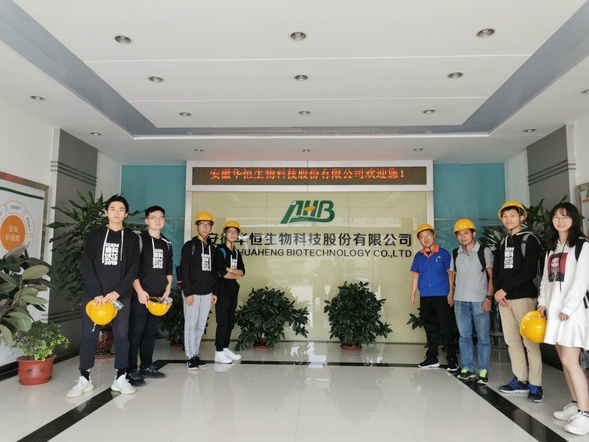
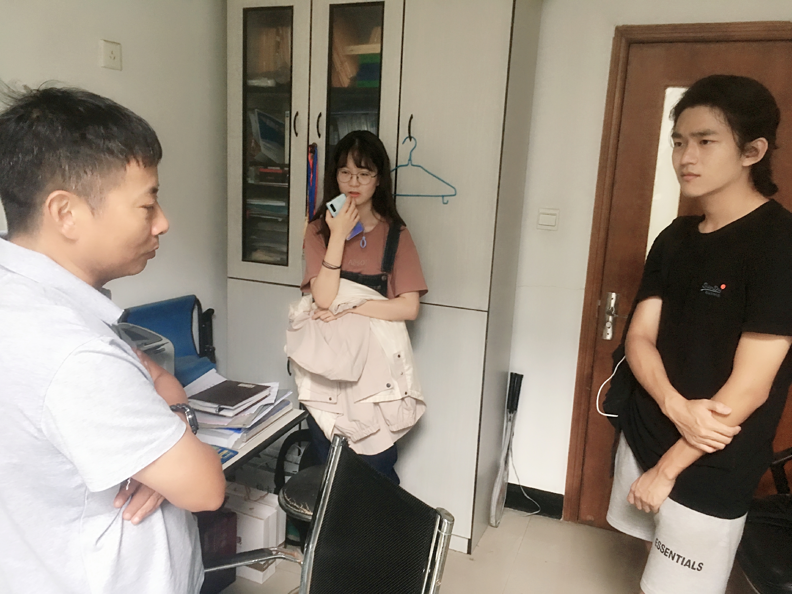
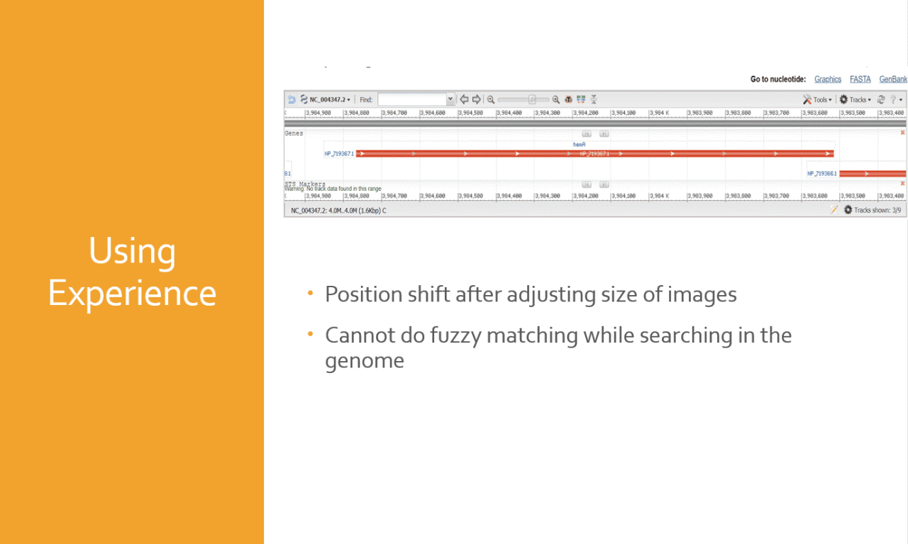
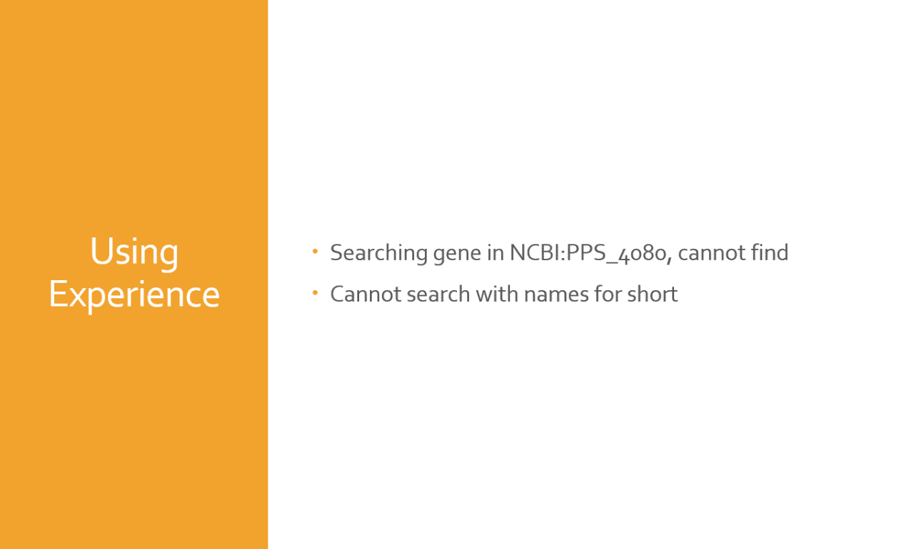
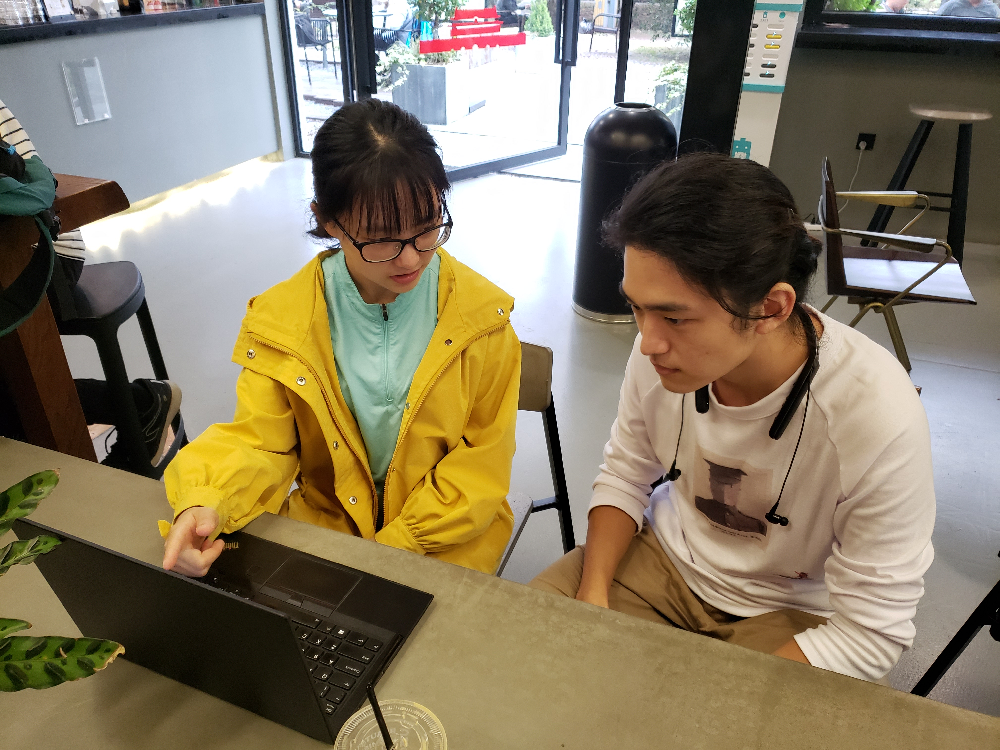
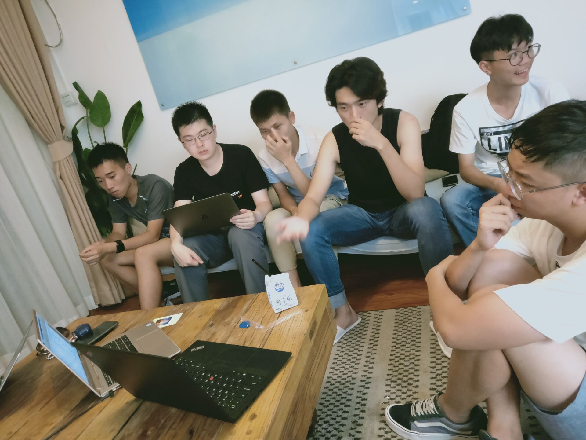
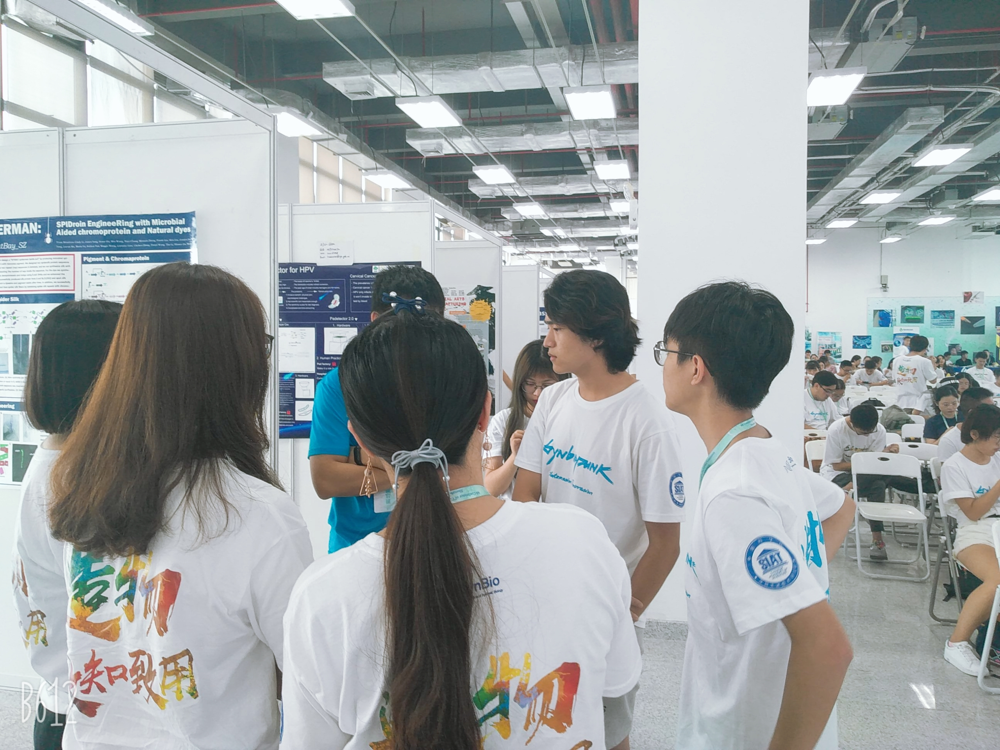
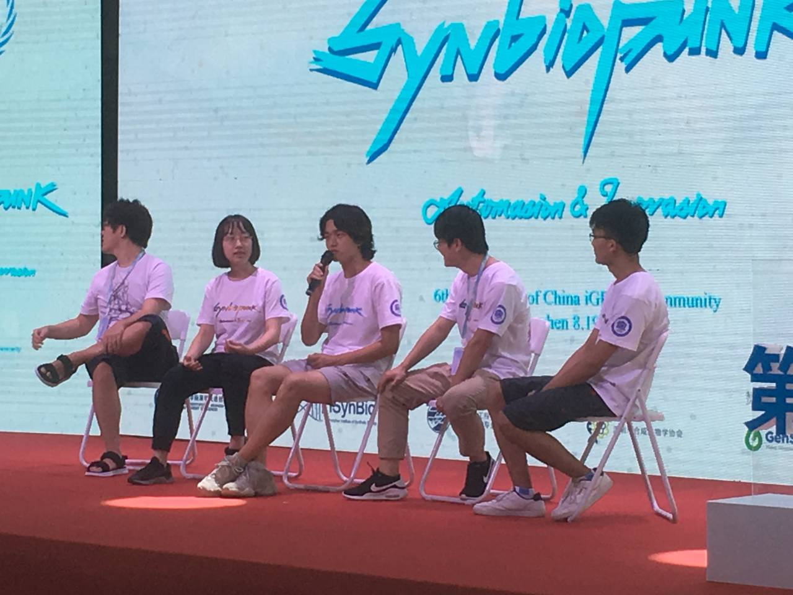

Huaheng Biotech is a company which the leading position around the world, in the field of
alanine products producing using methods of microbiological fermentation. They had put a major capital
investment in research and development. After communicating with their research leader, we took a visit to
their plant and had a meetup with their researchers.

Figure 1: Visit to Huaheng Biotech
During this trip, the research leader complained a lot about the inconvenience and unreliability of the industrial production process. Despite their high level of research, they said that there remained no good pre-analytical way to decide how to improve their process of production. The existing way and tools had too many limits to be used by researchers so that they could only experiment with changes thought out of experience. Also, with careful consideration of environmental protection, they kept on finding ways to improve their products while not impact productive rates.
We talked a lot with the leader about what we have seen. Naturally, an idea occurred to our mind that we may be able to do something to make the industrial process easier. The leader was glad we had this thought.
Meeting with Prof. Jiong Hong
After acknowledging the problems faced in the real world, we went to have a meeting with our PI, professor
Jiong Hong. Prof. Hong informed us about the existence of Flux Balance Analysis and further researches based
on it. Then we had some investigation about FBA, only to find that all existing tools to do FBA lack the
ease of use despite the beauty of its method. It first came into our mind to build a great FBA tool that
meets the requirements of real production environments.

Figure 2: Meeting with Prof. Jiong Hong
"Indeed, there is a huge gap between theoretical production and the real industrial process. however, maybe you can think about one aspect of the production such as Flux Balance Analysis and use linear programming to make production."
Preliminary product design
We proposed a revolutionary workflow that would greatly improve efficiency and decrease the complexity of
using. In other words, we designed a high-level framework to automatically solve many inner logics and thus
simplify the process of analysis.


Figure 3: Downsides of current product
We first considered to support a wild and customized searching function based on the optimization of
databases. After a job done by UESTC-Software in 2018, we wanted to do some upgrade of the scale of
databases.

Figure 4: Learn cobra
Then we visited Wenfei Yu, the leader of team USTC in 2018, and got acknowledged about some common databases
used in Syn-Biology and their shortcomings. Also, we became aware of cobrapy, a tool that offers several
APIs to do FBA.
To help us, USTC 2019 team gave us a hand, they helped us invite Pengcen Jiang, who had a good command of Cobra and was one of the USTC 2016. After her careful and patient instruction, we had a comprehensive acknowledge of Cobra, which is of great benefit to our project.
Mid-term: A Change of Emphasis
Meetup with SYSU 2019 team
We went to Guangzhou in July and visited the iGEM team of Sun Yat-sen University. In the meetup, we
introduced our projects to each other. At that time, we devoted ourselves to optimize our database which was
at a great scale and then linking the output to FBA’s input. However, our idea hadn’t been fully approved by
the SYSU team and their professor. They put forward that out idea about optimizing massive databases was not
targeted for Synthetic Biology. In other words, there was a bias in our aim, for the work done to optimize
the databases will distract us to design FBA workflow and its efficiency.
Figure 5: Meetup with SYSU team
In the emergency meeting that night we all admitted that the problem did exist. Then we decided immediately
a change of emphasis of our project, which would more concentrated on the optimization of FBA and the whole
framework.
Discussion with upperclassmen
He helped us tease out our whole project and his clear thinking impressed us very much. He then raised a
question that whether we can provide a recommendation of Biobricks when we end up giving graphs of analysis.
The same wind blows on us all.
The difference in arrival is not
the blowing of the wind,
but the set of the sail.
— Jim Rohn
For example, if modifications and analysis had been done to the user's model based on E. coli, the
researcher can immediately be acknowledged by our system which Biobricks he or she can use. After more
discussion, we found it would be a pretty useful function. So we decided to append our system with a micro
recommendation system for proper Biobricks.

Figure 6: Discussing with senior student
CCIC: Weighing and Cooperating
CCic, which stands for the Conference of China iGEMer Community, is the biggest synthetic biology conference
in China. This year we had a wonderful time there in Shenzhen. We did presentations and our idea was
evaluated by many experts and lovers in the field of synthetic biology. There we were encouraged to expand
our project to a platform, using which users can share their models, and see the history of modifying. It
enriched our project, made it closer to a mature one.
Figure 7: Attending the CCIC meeting
Communication with Tongji 2019
After our presentation, teammates of Tongji 2019 found us and asked whether we can offer some more specific
suggestions, for their project was related to increasing generation rate of products of fermentation.
After knowing that we can only analyze changes of major metabolites’ flux, they were quite disappointed. We
talked to the professors and some senior students there at CCIC and they approved our design. For "it is not
unnecessary for a researcher who does flux analysis to do this job, for it should be considered during
experimental design. Your analysis of flux major metabolites is much more useful in a generative perspective
and considering the accuracy."

Figure 8: Communication
Cooperating with UESTC-Software
During the communication with UESTC-Software 2019, we came up with the idea to build our recommendation
system base on their well-handled data, for they had done a great job in collecting data and optimizing
databases. We then reached cooperation with each other and the first time opened up collaboration lying
deeply in the projects of iGEM Software Teams.

Figure 9: Communication with UESTC
Test Run
With USTC 2019
Team USTC has always been enthusiastic to help us test our tool and improve our project. We had done several
tests together, during which some small functions, such as optimizations with the display of graphs in the
output, comparisions between different but alike models and polishing UI of the interface, were added in.
 In the emergency meeting that night we all admitted that the problem did exist. Then we decided immediately
a change of emphasis of our project, which would more concentrated on the optimization of FBA and the whole
framework.
In the emergency meeting that night we all admitted that the problem did exist. Then we decided immediately
a change of emphasis of our project, which would more concentrated on the optimization of FBA and the whole
framework.